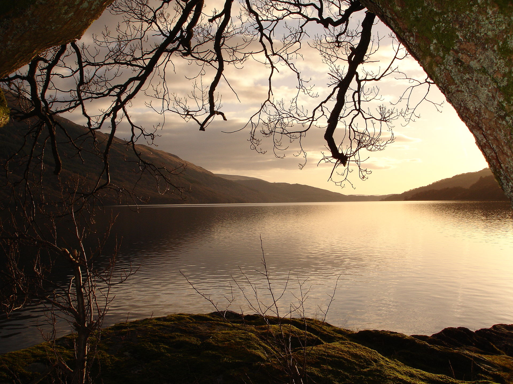
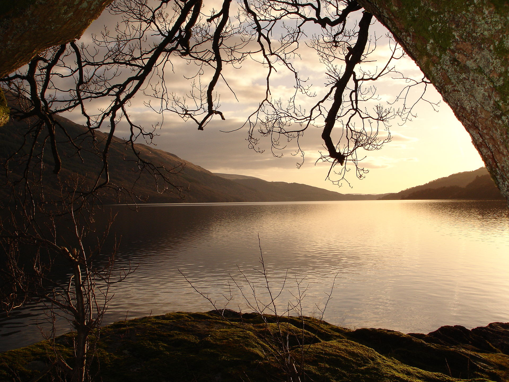

Earth is the only planet known to support life, and its natural features are the subject of many fields of scientific research. Within the solar system, it is third closest to the sun; it is the largest terrestrial planet and the fifth largest overall. Its most prominent climatic features are its two large polar regions, two relatively narrow temperate zones, and a wide equatorial tropical to subtropical region.Precipitation varies widely with location, from several metres of water per year to less than a millimetre. 71 percent of the Earth's surface is covered by salt-water oceans. The remainder consists of continents and islands, with most of the inhabited land in the Northern Hemisphere. Earth has evolved through geological and biological processes that have left traces of the original conditions. The outer surface is divided into several gradually migrating tectonic plates. The interior remains active, with a thick layer of plastic mantle and an iron-filled core that generates a magnetic field. This iron core is composed of a solid inner phase, and a fluid outer phase. Convective motion in the core generates electric currents through dynamo action, and these, in turn, generate the geomagnetic field.
The Earth's atmosphere is a key factor in sustaining the ecosystem. The thin layer of gases that envelops the Earth is held in place by gravity. Air is mostly nitrogen, oxygen, water vapor, with much smaller amounts of carbon dioxide, argon, etc. The atmospheric pressure declines steadily with altitude. The ozone layer plays an important role in depleting the amount of ultraviolet (UV) radiation that reaches the surface. As DNA is readily damaged by UV light, this serves to protect life at the surface. The atmosphere also retains heat during the night, thereby reducing the daily temperature extremes. Terrestrial weather occurs almost exclusively in the lower part of the atmosphere, and serves as a convective system for redistributing heat.[26] Ocean currents are another important factor in determining climate, particularly the major underwater thermohaline circulation which distributes heat energy from the equatorial oceans to the polar regions. These currents help to moderate the differences in temperature between winter and summer in the temperate zones. Also, without the redistributions of heat energy by the ocean currents and atmosphere, the tropics would be much hotter, and the polar regions much colder.
Water is a chemical substance that is composed of hydrogen and oxygen (H2O) and is vital for all known forms of life.In typical usage, water refers only to its liquid form or state, but the substance also has a solid state, ice, and a gaseous state, water vapor, or steam. Water covers 71% of the Earth's surface.On Earth, it is found mostly in oceans and other large bodies of water, with 1.6% of water below ground in aquifers and 0.001% in the air as vapor, clouds, and precipitation.Oceans hold 97% of surface water, glaciers, and polar ice caps 2.4%, and other land surface water such as rivers, lakes, and ponds 0.6%. Additionally, a minute amount of the Earth's water is contained within biological bodies and manufactured products.
Ecosystems are composed of a variety of biotic and abiotic components that function in an interrelated way. The structure and composition is determined by various environmental factors that are interrelated. Variations of these factors will initiate dynamic modifications to the ecosystem. Some of the more important components are soil, atmosphere, radiation from the sun, water, and living organisms. Peñas Blancas, part of the Bosawás Biosphere Reserve. Located northeast of the city of Jinotega in Northeastern Nicaragua Central to the ecosystem concept is the idea that living organisms interact with every other element in their local environment. Eugene Odum, a founder of ecology, stated: "Any unit that includes all of the organisms (ie: the "community") in a given area interacting with the physical environment so that a flow of energy leads to clearly defined trophic structure, biotic diversity, and material cycles (i.e.: exchange of materials between living and nonliving parts) within the system is an ecosystem. Within the ecosystem, species are connected and dependent upon one another in the food chain, and exchange energy and matter between themselves as well as with their environment. The human ecosystem concept is based on the human/nature dichotomy and the idea that all species are ecologically dependent on each other, as well as with the abiotic constituents of their biotope. A smaller unit of size is called a microecosystem. For example, a microsystem can be a stone and all the life under it. A macroecosystem might involve a whole ecoregion, with its drainage basin.
Originally Aristotle divided all living things between plants, which generally do not move fast enough for humans to notice, and animals. In Linnaeus' system, these became the kingdoms Vegetabilia (later Plantae) and Animalia. Since then, it has become clear that the Plantae as originally defined included several unrelated groups, and the fungi and several groups of algae were removed to new kingdoms. However, these are still often considered plants in many contexts. Bacterial life is sometimes included in flora, and some classifications use the term bacterial flora separately from plant flora. Among the many ways of classifying plants are by regional floras, which, depending on the purpose of study, can also include fossil flora, remnants of plant life from a previous era. People in many regions and countries take great pride in their individual arrays of characteristic flora, which can vary widely across the globe due to differences in climate and terrain. Regional floras commonly are divided into categories such as native flora and agricultural and garden flora, the lastly mentioned of which are intentionally grown and cultivated. Some types of "native flora" actually have been introduced centuries ago by people migrating from one region or continent to another, and become an integral part of the native, or natural flora of the place to which they were introduced. This is an example of how human interaction with nature can blur the boundary of what is considered nature. Another category of plant has historically been carved out for weeds. Though the term has fallen into disfavor among botanists as a formal way to categorize "useless" plants, the informal use of the word "weeds" to describe those plants that are deemed worthy of elimination is illustrative of the general tendency of people and societies to seek to alter or shape the course of nature. Similarly, animals are often categorized in ways such as domestic, farm animals, wild animals, pests, etc. according to their relationship to human life.
 
